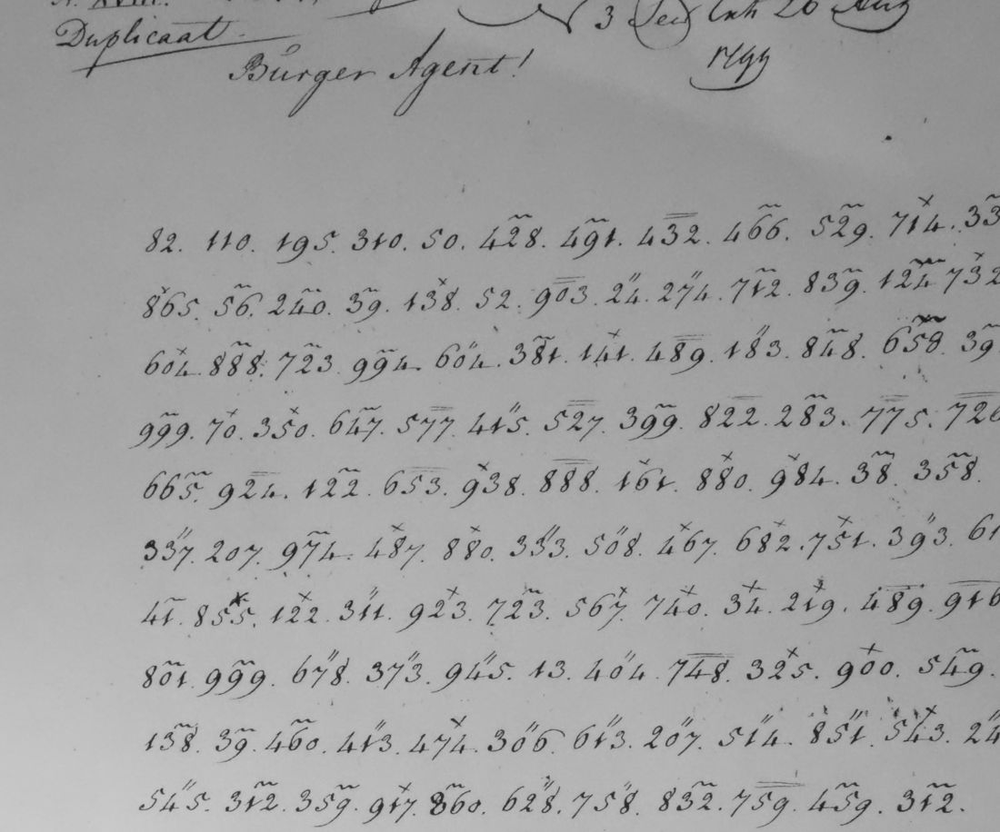

At a glanceNot solved · text not obtained
- The letter
- F.G. van Dedem tot de Gelder, ambassador at Constantinople, to the “Burger Agent” Maarten van der Goes, No. XVIII, “Duplicaat”, 26 August 1799.
- Where
- Nationaal Archief, The Hague, 2.01.08 (Van der Goes), inv. 346; DECODE R1895, four images. The first image is an unrelated clear page signed Schimmelpenninck.
- The cipher
- Two- and three-digit groups separated by points, many carrying a mark above (×, ″, a bar or a tilde) or a line below, in the style of Croiset’s marked codes. It is not the code of Van Dedem’s despatches of 1788–93.
- How it was tried
- Compared with the 1788–93 code and its deciphered siblings, and found different. No key for it is on DECODE.
- Still open
- The transcription of the two code pages and a key.
This page was split on 14 October 2026 from the entry for catalogue item 225. Van Dedem’s despatches of 1788–93 to Van de Spiegel are in another code, a different cipher with its own page: Van Dedem at Constantinople, 1788–1793.
01 The record

The despatch has four images on DECODE. The first is a clear page signed Schimmelpenninck that does not belong to it. The second opens with the heading and about eleven lines of code; the third is in clear Dutch; the fourth is more code. The groups are short, two or three digits, and many carry a mark above them or a line below. In Van Dedem’s code of 1788–93 the groups run up to 3839 and have no marks, so the 1799 despatch is in another system, probably one of the marked nomenclators that the Dutch cipher office issued in Croiset’s style.
02 What remains open
- The transcription. The two code pages have not been transcribed group by group, marks included.
- A key. No key for this code is on DECODE, and none is cited in the notes. The marked codes of the Batavian legations read elsewhere on this site (for example the R1024 and R1038 families) have not been tried on it.
03 Sources
- DECODE R1895 (Nationaal Archief 2.01.08 inv. 346).
Notes: targets/dedem1799/. The record was examined in the joint entry, targets/dedem1788/, on 21 September 2026.